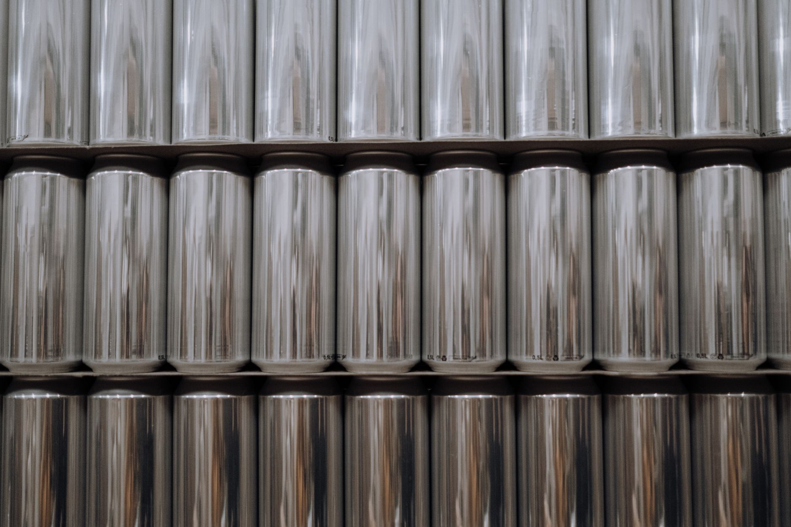

Are you a silver investor looking to understand where the metal really goes? Many investors focus solely on silver’s potential as a store of value, driven by inflation fears and geopolitical uncertainty. While that’s certainly part of the story, a significant portion of silver demand comes from its crucial role in a vast array of industrial applications. At Fused Distribution, we stock silver for investors seeking a diversified portfolio, and we believe understanding these industrial uses is vital for making informed decisions. This isn’t just about speculation; it’s about recognizing the fundamental drivers of silver’s price and appreciating its long-term value. We skip the dealer markup games and confusing premiums. You get clear pricing. We cut out the pressure. Reserve your space now at our reserve page.

The Core of Silver’s Industrial Value: Conductivity and Corrosion Resistance
Silver’s unique properties - exceptional electrical conductivity and remarkable resistance to corrosion - are the bedrock of its industrial importance. These aren't just desirable traits; they’re essential for a wide range of applications. Consider the sheer volume of electricity flowing through circuits in your smartphone, your car, or your home. Silver is a primary material in conductors, ensuring efficient and reliable performance. Its resistance to corrosion means it maintains its integrity in harsh environments, extending the lifespan of countless products. This inherent value translates directly into consistent demand, regardless of short-term market fluctuations.
Solar Panel Efficiency: Silver’s Bright Future
Perhaps one of the most impactful industrial uses of silver is in solar panel manufacturing. Silver paste is used to create electrical contacts on the silicon wafers, facilitating the flow of electricity generated by sunlight. The efficiency of solar panels is directly tied to the amount of silver used - more silver, more efficient panels.

Electronics: A Constant Demand Driver
Beyond solar panels, silver is a critical component in a staggering array of electronic devices. From smartphones and computers to televisions and medical equipment, silver is used in printed circuit boards (PCBs), connectors, and wiring. The miniaturization of electronics has dramatically increased the demand for silver - smaller components require finer wires and connections, and silver excels in these applications.
Batteries: Powering the Future - and Silver’s Demand
Lithium-ion batteries, the power source for most portable electronics and increasingly for electric vehicles, rely heavily on silver. Silver is used in the battery’s electrodes, specifically in the bipolar plates, to improve conductivity and reduce internal resistance. As the electric vehicle market continues to expand, so does the demand for silver in battery production.
Alloys: Strengthening Materials with Silver
Silver isn't always used in its pure form; it’s frequently alloyed with other metals to enhance their properties. These silver alloys are used in a variety of applications, including:
- Dental Alloys: Silver alloys are used to create durable and biocompatible fillings and crowns.
- Photography: Silver halides were historically used in photographic film - while digital photography has largely replaced film, the legacy continues.
- Investment Alloys: Silver is alloyed with copper to create bullion coins and bars, providing a stable and recognized form of value.
- Specialty Alloys: Silver alloys are used in high-temperature applications, providing corrosion resistance and strength.
The use of silver in alloys contributes approximately 10% to the overall demand for the metal.
Medical Applications: Precision and Reliability
The medical field relies on silver’s unique properties for a variety of crucial applications. Silver nanoparticles are used in wound dressings to prevent infection and promote healing. Silver-coated catheters and implants reduce the risk of biofilm formation and subsequent infections. Also, silver’s antimicrobial properties are being explored for use in surgical instruments and medical devices. For more on this, see How To Start Buying Silver With 100 Dollars.
Automotive Industry: Beyond Batteries
The automotive industry’s increasing reliance on electronics and advanced materials is driving up silver demand. Beyond battery applications, silver is used in sensors, connectors, and wiring harnesses in vehicles. The shift towards electric vehicles, with their complex electrical systems, is expected to further increase silver demand in this sector.
Comparing Industrial Silver to Investment Grade Silver: A Critical Distinction
It’s crucial to understand the difference between industrial silver and investment-grade silver. Investment-grade silver prices are primarily driven by supply and demand dynamics, influenced by factors like inflation, geopolitical events, and investor sentiment. Industrial silver prices, however, are more closely tied to the specific needs of the industries that consume the metal. This means industrial silver prices tend to be less volatile than investment silver prices. For example, in 2022, investment silver prices experienced a significant surge due to inflation concerns, while industrial silver prices remained relatively stable. This difference is critical for investors seeking a stable and predictable investment. Industrial silver prices typically see gains of 5-10% per year.
Practical Steps for Investors: Evaluating Silver’s Industrial Relevance
As an investor, you can assess silver’s industrial relevance by focusing on the sectors driving demand. Don’t just look at the price of silver; investigate the industries that are using it. Research the growth potential of sectors like solar energy, electric vehicles, and electronics. Pay attention to industry reports and forecasts to understand the projected demand for silver in these areas. Consider diversifying your portfolio with investments in companies involved in these industries. Also, understanding the cost structure of industrial silver - the difference between investment-grade and industrial-grade pricing - is essential. Industrial silver prices are generally lower than investment silver prices, reflecting the different drivers of demand. Stop guessing about premiums. Reserve your silver straightforwardly at our reserve page. We recommend exploring Fused Distribution’s range of silver bullion and bars, carefully selected for purity and value. Our transparent pricing and streamlined ordering process make it easier than ever to build a physical silver reserve. Don’t let speculation dictate your investment strategy; focus on the fundamental drivers of silver’s value - its essential role in a diverse range of industries. We stock silver for investors seeking a diversified portfolio, and we believe understanding these industrial uses is vital for making informed decisions. This isn’t just about speculation; it’s about recognizing the fundamental drivers of silver’s price and appreciating its long-term value.
Related
- Silver Vs Cash Which Holds Value Better
- How To Start Buying Silver With 100 Dollars
- Silver Premium Over Spot Explained
Read next: Silver Vs Cash Which Holds Value Better